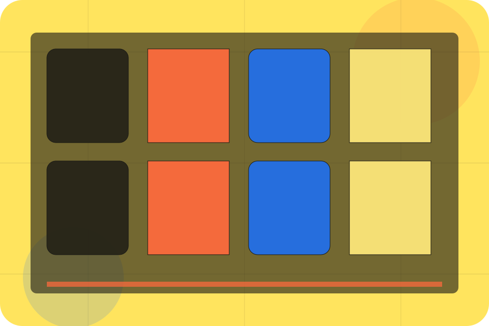

Contact / 01
Contact by Talent
Contact shaped for recruitment, hr & workplace services decisions.
Contact opens as a clear recruitment decision hub: what Talent offers, who it helps, why it matters, and which route to take first.
The first screen combines positioning, proof, primary action, and fast internal navigation, so people can act immediately or compare the rest of the contact route with context.
Recruitment scopeCompare optionsRequest advice
Yellow job magazine hero
Choose the audience
Select the closest route and Talent keeps the next step, proof, and follow-up expectation aligned with matching confidence for two audiences.

Contact / 02
Send the right details
Employers makes the contact path concrete: what to send, how the response works, and what Talent needs before visitors start hiring.
The section reduces contact friction by naming the channel, expected detail, privacy path, and response expectation instead of dropping visitors into a generic form.
Start HiringDetails
What information helps Talent respond with a useful answer instead of a generic reply.
Timing
How the visitor should think about response, urgency, location, or availability.
Reply
The expected next message keeps scope, timing, and the first practical step clear.
Contact / 03
Send the right details
Candidates makes the contact path concrete: what to send, how the response works, and what Talent needs before visitors start hiring.
The section reduces contact friction by naming the channel, expected detail, privacy path, and response expectation instead of dropping visitors into a generic form.
Start HiringDetails
What information helps Talent respond with a useful answer instead of a generic reply.
Timing
How the visitor should think about response, urgency, location, or availability.
Reply
The expected next message keeps scope, timing, and the first practical step clear.
Contact / 04
Partners as proof
Partners gives the proof layer for contact: standards, evidence, and reassurance that make the next decision feel grounded.
Instead of relying on vague claims, Talent presents visible standards, process cues, and proof artifacts that help recruitment visitors judge fit.
Start HiringEvidence
Visible proof that helps visitors believe the claims behind partners.
Contact / 05
Send the right details
Roles makes the contact path concrete: what to send, how the response works, and what Talent needs before visitors start hiring.
The section reduces contact friction by naming the channel, expected detail, privacy path, and response expectation instead of dropping visitors into a generic form.
Start HiringDetails
What information helps Talent respond with a useful answer instead of a generic reply.
Timing
How the visitor should think about response, urgency, location, or availability.
Reply
The expected next message keeps scope, timing, and the first practical step clear.
Contact / 06
Send the right details
Upload makes the contact path concrete: what to send, how the response works, and what Talent needs before visitors start hiring.
The section reduces contact friction by naming the channel, expected detail, privacy path, and response expectation instead of dropping visitors into a generic form.
Start HiringDetails
What information helps Talent respond with a useful answer instead of a generic reply.
Timing
How the visitor should think about response, urgency, location, or availability.
Reply
The expected next message keeps scope, timing, and the first practical step clear.
Contact / 07
Send the right details
Response makes the contact path concrete: what to send, how the response works, and what Talent needs before visitors start hiring.
The section reduces contact friction by naming the channel, expected detail, privacy path, and response expectation instead of dropping visitors into a generic form.
Start HiringDetails
What information helps Talent respond with a useful answer instead of a generic reply.
Timing
How the visitor should think about response, urgency, location, or availability.
Reply
The expected next message keeps scope, timing, and the first practical step clear.
Contact / 08
How the steps path works
Steps explains the operating sequence so visitors can see how the first request becomes a clear recommendation and follow-up.
The steps are written from the visitor side: what they do first, what Talent clarifies, what they receive, and how support continues.
Start HiringStart
How visitors begin this route and what detail is useful at the first step.
Clarify
What Talent reviews, filters, or explains before recommending the next move.
Continue
What the visitor receives afterward, including support, proof, or a handoff to the next page.
Contact / 09
Send the right details
Submit makes the contact path concrete: what to send, how the response works, and what Talent needs before visitors start hiring.
The section reduces contact friction by naming the channel, expected detail, privacy path, and response expectation instead of dropping visitors into a generic form.
Start HiringDetails
What information helps Talent respond with a useful answer instead of a generic reply.
Timing
How the visitor should think about response, urgency, location, or availability.
Reply
The expected next message keeps scope, timing, and the first practical step clear.
Contact / 10
Start Hiring
Talent closes the contact route with a clear action, a quick reminder of the value, and a low-friction way to start hiring.
Visitors who are ready can use the primary action. Visitors who are still comparing can scan the section links, proof, and support routes before they start hiring.
Start HiringThe final block keeps the choice simple: act now, compare one more proof route, or send enough detail for a focused response.
Start Hiringmatching confidence for two audiences
Start Hiring
A recruitment magazine site with candidate/employer split, bold editorial cards, people proof, and upload routes. Contact ends with a direct path to start hiring, plus enough context for visitors who still need to compare.
Important notes before you act
Information is provided for planning and should be reviewed for the final client, location, and operating rules.